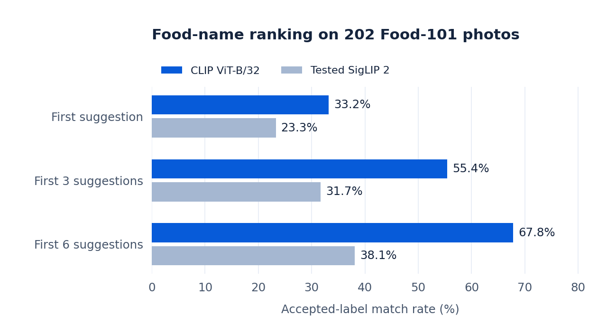
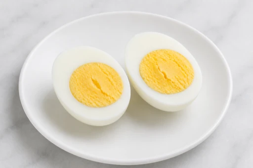

Project report · Computer vision & application engineering
Food AI
Photo Suggestions & Model Evaluation
Turning a food photo into suggestions someone can check before logging.
Technologies Python · CLIP · FastAPI · ONNX Runtime · Flutter · Google Cloud
Project overview
I built DiaCare’s food-photo suggestion service and its Flutter integration: candidate-name ranking, model-comparison tools, response handling, and a confirmation flow that connects a selected name to a food record and serving.
The work uses pretrained models rather than a food classifier trained from scratch. The CLIP approach ranks 2,356 candidate food names; this describes catalogue coverage, not recognition accuracy. A separate experimental provider returns open-ended names for confirmation.
How I built it
- Separate a suggestion from a log entry. Ask for consent before uploading, show candidate food names, and let the user confirm a food record and portion. Uncertain matches stay explicitly tentative; nonfood results do not force a food name.
- Prepare the serving runtime. Precompute food-name embeddings and export the CLIP image encoder to ONNX. The service avoids loading the text encoder for each request; ranking collapses reviewed spelling variants while keeping preparation variants separate.
- Compare alternatives on the same sample. Evaluate CLIP and a pinned SigLIP 2 configuration against the same candidate catalogue and accepted labels. Measure raw name ranking separately from the food-presence gate and the complete camera workflow.
Engineering decisions
Relative image/text similarity is not a confidence probability. The client preserves that distinction and accepts unscored provider names only when confirmation is required. Portion calculations use confirmed reference weights, counts, or container information; the photo is not treated as a measurement of grams or nutrients.
The API checks Firebase ID tokens and image type, byte size, and pixel limits. A best-effort readiness request overlaps server startup with camera use without uploading a photo. Recognition stages share a 30-second analysis budget; cancellation stops the interface waiting, although remote work may continue. Retry, another photo, and manual search give the user recovery paths.
Results
In the saved October 3, 2026 comparison on 202 Food-101 photos, CLIP returned an accepted label first on 67 photos (33.2%), compared with 47 (23.3%) for the tested SigLIP 2 configuration. CLIP won this CLIP-versus-SigLIP comparison; selection against the open-ended provider remains unresolved.
CLIP included an accepted name among its first six suggestions for 137 of 202 images, but ranked one first for only 67. This supports further investigation of a suggestion-and-confirmation interface; it does not establish that the workflow saves users time.
This is a small research sample using exact or reviewed spelling matches. The food-presence gate was bypassed and nonfood images were excluded. These numbers measure name ranking, not complete app accuracy; alternative valid names can count as misses.
| Model | First name | First 6 names |
|---|---|---|
| CLIP ViT-B/32 | 67 / 202 · 33.2% | 137 / 202 · 67.8% |
| Tested SigLIP 2 | 47 / 202 · 23.3% | 77 / 202 · 38.1% |


Figure 1. Comparing food-name ranking
Generated from the saved aggregate experiment. Higher means more accepted-label matches within the first one, three, or six suggestions. This model-selection sample is not an untouched final test set.
Recorded example: the match was second

- Input. A boiled-egg development asset, shown here.
- Recorded suggestions. The CLIP research note places “hard boiled eggs” second. The separate open-ended run returned “hard-boiled egg” and “egg”.
- Review · illustrated. Choose the specific food, or search manually if the suggestions are wrong; correct the serving yourself.
- Confirmation · illustrated. Save only after confirming the food record and serving.
Supporting evidence: open-ended names and implementation checks
The open-ended experiment returned an accepted first name on 56.9% of the same 202 photos. Its component-name lists differ from CLIP’s ranked alternative dish names, and the experiment recorded 13 failures across 209 requests. These results do not establish which approach is better for the complete app. A shared workflow evaluation covering catalogue resolution, user corrections, failures, latency, and cost is still needed.
35 backend tests and 38 focused Flutter tests passed on October 24, 2026. The evidence summary documents their coverage, mocks, and limits, alongside the historical experiment results.
Limits & next steps
The small, selected sample has limited cuisine coverage, and there is no independent camera-workflow benchmark or validated portion or nutrient estimation. Food and serving still require confirmation. External-provider retention depends on the provider; in-memory handling by this backend does not establish zero retention elsewhere.
Takeaway & next step. A newer image model did not automatically rank the right names better, and a larger catalogue did not by itself establish accuracy. Next, I would reserve a consented, independently labelled camera-photo test set before further model selection, with regional dishes, look-alikes, packaged foods, mixed plates, and nonfood examples evaluated separately. I would also measure correction effort and time to a confirmed entry before claiming practical benefit.
Evidence: experiment & test summary · saved aggregate comparison · DiaCare product website · application workflow report.